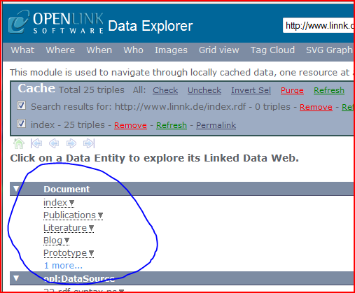

As a result of the nature of the Linked Data principles, documents need to be available on the web (or through web technologies) to be able to be viewed by Linked Data browsers.
For this, the documents of the database must be available at the EXACT URI as specified when the database has been created.
Luckily, Linnk databases are Portable, and simply the folder of the database needs to be uploaded to any web server with a matching address.
This website, for instance, can be browsed using the Open Link Data Explorer by navigating to the resource http://www.linnk.de/index.rdf.

See: